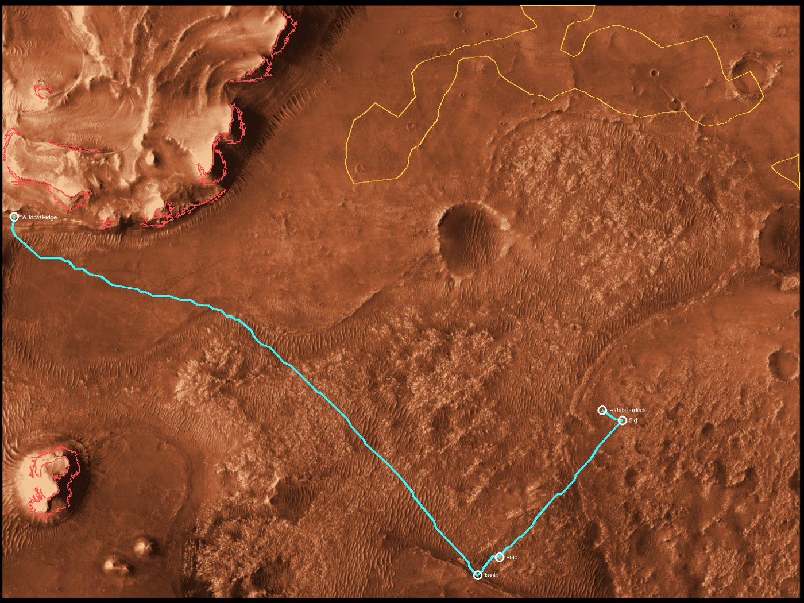
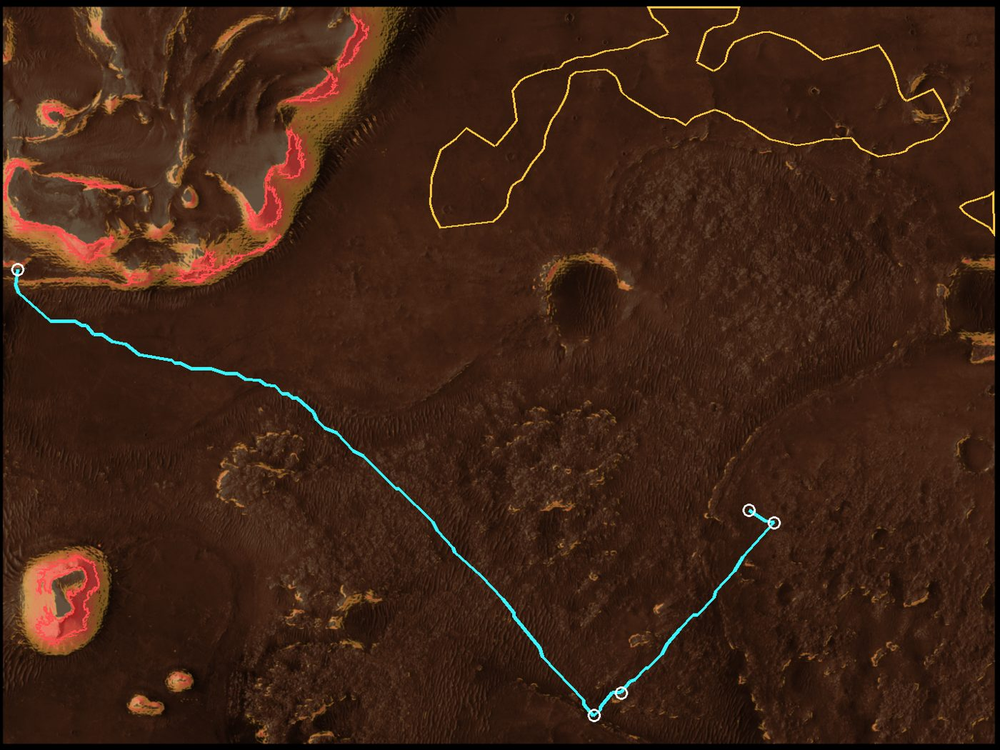
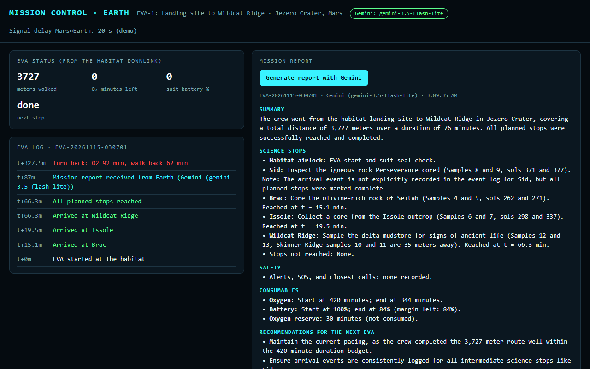

No GPS. No internet. Eleven minutes from Earth. A Mars EVA survival map on your wrist, built from real NASA data.
View the code on GitHub How it worksAn astronaut walking on Mars has no GPS, no compass (Mars has no global magnetic field) and no live help: a radio message to Earth takes 5 to 22 minutes each way. They still need to know, every minute: where am I, what is dangerous ahead, and do I have enough oxygen to get home?
A wrist-worn Raspberry Pi 5 with a 5-inch touch display guides the astronaut along a safe route. Everything runs offline on the device.
HiRISE 25 cm imagery of Jezero Crater with a slope layer from the 1 m HiRISE terrain model. About 220 MB, stored on the device.
Ground steeper than 25° and THEMIS loose sand become hazard zones. An A* planner finds a route that stays under 15°.
Sid, Brac, Issole and Wildcat Ridge: places where Perseverance actually cored samples, located from NASA's sample list and rover positions.
Oxygen and battery tracking with a turn-back rule: oxygen left must cover the walk home plus a 30-minute reserve.
"Where are we?", "Is there danger ahead?", "When do we turn back?" Short spoken answers built from live data.
SOS and messages to Mission Control are held back by the true Earth-Mars light delay for today's date.
On Earth, Gemini turns the EVA log into a mission report and answers the team's questions, using only logged facts.
Large touch buttons (Talk, Next, Zoom, Pause, Center, SOS) and a layout tuned for the 5" screen.
Jezero Crater, where Perseverance landed in 2021. The route starts at the real landing site and visits four real sample sites before reaching the delta front.


The wrist unit never depends on Earth. Data still goes home, slowly, the way Perseverance's does today.
After the walk, the EVA log crosses to Earth, Gemini writes the report, and it crosses back. Gemini is instructed to use only the logged numbers; when something wasn't recorded, it says so.

Every layer comes from a NASA mission. Our pipeline cuts out only the Jezero area, computes slope, finds hazards and plans the route.
| Layer | Source | Used for |
|---|---|---|
| Imagery, 25 cm | MRO HiRISE, Mars 2020 TRN orthomosaic (USGS, DOI 10.5066/P9QJDP48) | Base map |
| Terrain, 1 m | MRO HiRISE, Mars 2020 TRN DTM mosaic (USGS, DOI 10.5066/P9REJ9JN) | Slope layer, steep-slope hazards, route planning |
| Soft ground | Mars Odyssey THEMIS-derived thermal inertia of Jezero (Zenodo 4931348) | Loose-sand hazards |
| Overview imagery | MRO CTX mosaic (NASA/JPL/MSSS, Caltech Murray Lab) | Wider context map |
| Science stops | NASA Mars 2020 sample list + Perseverance rover positions (NASA/JPL MMGIS) | Real sample sites as waypoints |
| Weather | Perseverance MEDA (representative values) | Dust, temperature, pressure |
| Radiation | Curiosity RAD surface average (Gale Crater, as a proxy) | Radiation reading |
HiRISE and CTX imagery are greyscale; we color them for readability. Weather values are representative, not one specific sol. Comparing our route with Perseverance's real tracks showed the rover avoided a sand-ripple field that our slope and thermal data didn't flag; adding rover tracks and ripple detection is our next step.
Show the shrinking area you can still reach and return from with the oxygen left.
Prefer terrain Perseverance actually drove on when planning routes.
The same pipeline builds any site with HiRISE terrain, such as Gale Crater.
Team: Mangal Yatra team, NASA Space Apps 2026 (NYU local event).
AI tools: Claude (Anthropic) helped write code and the data pipeline. The app uses the Gemini API (Google) at Mission Control for EVA reports and questions, and speech recognition for voice commands. All safety calculations (route, hazards, oxygen, turn-back) are plain math on NASA data, not AI.